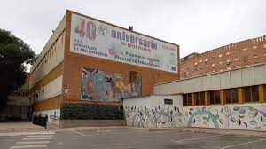

Fundado en 1978, nuestro Centro, ligado profundamente a la historia del barrio de Nueva Málaga y sus gentes, ha dedicado décadas a la educación de agentes activos de nuestra sociedad, gracias a un equipo docente y una Comunidad Educativa comprometidos.
=======  >>>>>>> desarollo